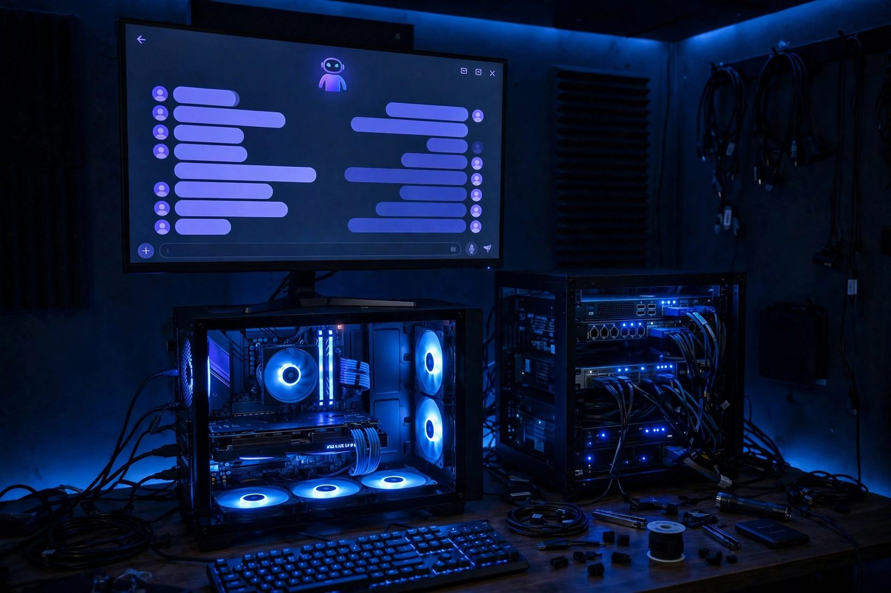

TYF-AI: Self-Hosted Local AI Security Platform
A hardened, fully local AI inference stack: llama.cpp with CUDA, Open WebUI behind authenticated reverse proxy, and per-model sandboxing on Proxmox with GPU passthrough.

Overview
TYF-AI removes cloud AI dependency for inference by serving quantized GGUF models on local hardware while treating the inference engine as an untrusted workload. Open WebUI sits behind a Caddy reverse proxy that enforces authentication (basicauth in the example below) and rate limiting, and each model process runs as a dedicated UID inside a Firejail sandbox with iptables owner-match rules dropping all non-loopback egress. Model inference itself makes no external calls; note that if web search is enabled, derived search queries do leave the local environment.
System Architecture
basicauth + rate limit] C --> W[Open WebUI] W -->|REST| LC[llama.cpp CUDA server] LC --- GG[("GGUF Q4_K_M / Q5_K_M")] LC -. confined by .-> FJ[Firejail Sandbox
+ UID egress firewall] subgraph PVE["Proxmox VE 8.1"] VM[AI VM] -->|PCI passthrough| GPU[NVIDIA GPU] end LC --- VM
Threat Model: Local vs Cloud AI (STRIDE)
| STRIDE | Cloud AI | TYF-AI (Local) |
|---|---|---|
| Spoofing | Provider account takeover | Caddy basicauth + rate limiting |
| Tampering | Opaque model updates | Pinned GGUF checksums (trust still rooted in the download source) |
| Information Disclosure | Prompts leave your network | Inference never leaves the host (web search, if enabled, sends derived queries out) |
| Denial of Service | Vendor rate limits | Local rate limiting in Caddy |
| Elevation of Privilege | N/A | Firejail confines model process |
Deployment
GPU passthrough on Proxmox
Prerequisites: IOMMU enabled in the BIOS and on the kernel command line (intel_iommu=on or amd_iommu=on in GRUB), with the GPU in its own IOMMU group. Then bind the GPU to vfio-pci so the AI VM owns it exclusively, enabling CUDA-accelerated inference.
# /etc/modprobe.d/vfio.conf
# 10de:2231 is the NVIDIA RTX A5000; find your own GPU ID with: lspci -nn | grep -i nvidia
options vfio-pci ids=10de:2231
# then:
update-initramfs -u -k all && reboot
# verify the driver claimed it:
lspci -nnk -d 10de:2231 # expect "Kernel driver in use: vfio-pci"Run the sandboxed inference server
A dedicated llama user runs the model; iptables owner-match rules drop all of its non-loopback egress, so the process can serve local clients but cannot phone home. Firejail adds filesystem, capability, and syscall confinement on top. (A plain firejail --net=none would also cut off the local Open WebUI, which is why the network control lives in the firewall instead.) The service account needs the video and render groups for GPU device access. These rules are volatile: persist them with netfilter-persistent (the iptables-persistent package) or re-apply them from a systemd unit, otherwise a reboot silently re-opens egress.
useradd -r -s /usr/sbin/nologin llama
usermod -aG video,render llama
# Only loopback egress for the model account; drop everything else
iptables -A OUTPUT -m owner --uid-owner llama -o lo -j ACCEPT
iptables -A OUTPUT -m owner --uid-owner llama -m state --state ESTABLISHED,RELATED -j ACCEPT
iptables -A OUTPUT -m owner --uid-owner llama -j DROP
sudo -u llama firejail --private --caps.drop=all --seccomp \
./llama-server -m models/model-q4_K_M.gguf --n-gpu-layers 35 --port 8080 --host 127.0.0.1Authenticated reverse proxy (Caddyfile)
Basicauth is built into standard Caddy. The rate_limit directive is not: it needs a custom Caddy build with the caddy-ratelimit module, configured here with a per-client key, a one-minute window, and a 60-event limit. Generate the password hash with caddy hash-password. Open WebUI is proxied on port 3000 rather than its 8080 default so it does not clash with llama-server.
ai.tyfsadik.org {
basicauth {
taki $2a$14$REPLACE_WITH_BCRYPT_HASH
}
reverse_proxy localhost:3000
rate_limit {
zone ai {
key {remote_host}
window 1m
events 60
}
}
}Security Hardening
- Prompt injection: system-prompt isolation and output filtering on tool-use responses.
- Model integrity: SHA-256 pinning of GGUF files detects post-download modification, but a checksum only proves the file matches a known-good value; initial trust still depends on where the model was downloaded from.
- Data leakage: the model runs as a dedicated UID whose non-loopback egress is dropped by iptables owner-match rules, so it can serve local clients but cannot phone home or pivot.
- Credential management: proxy-level credentials, revocable by updating the Caddyfile and reloading.
Key Results
- Inference runs locally on the passed-through GPU; latency and concurrency depend on the model, quantization, and VRAM (measure on your own hardware before quoting numbers).
- Removed external AI API calls for internal tooling; model inference itself makes no external calls. Note: enabling web search sends derived search queries to search providers.
- Model execution is sandboxed (Firejail) and UID-firewalled to contain a compromised runtime; like any sandbox, this raises the bar rather than proving containment.
- Runs alongside other self-hosted services on the same node.
How I built it
TYF-AI treats the model runtime as an untrusted workload: prompts never leave the building, and the inference process itself is sandboxed, authenticated, and integrity-checked like any hostile binary would be.
- Phase 1, give the VM the GPU: Bound the NVIDIA GPU to vfio-pci on the Proxmox host and passed it through to a dedicated AI VM for CUDA-accelerated inference.
- Phase 2, serve quantized models: Ran the llama.cpp server with CUDA offload on GGUF Q4_K_M and Q5_K_M quantizations, balancing quality against VRAM.
- Phase 3, sandbox the runtime: Ran the inference server as a dedicated UID inside Firejail, with iptables owner-match rules dropping all non-loopback egress, so even a compromised model process cannot phone home or pivot.
- Phase 4, gate the front door: Put Open WebUI behind a Caddy reverse proxy enforcing basicauth authentication and per-client rate limiting.
- Phase 5, verify integrity: Pinned SHA-256 checksums on every GGUF file to detect post-download tampering, and added system-prompt isolation plus output filtering for tool-use responses.
What you need
| Category | Item | Notes |
|---|---|---|
| Hardware | NVIDIA GPU with enough VRAM for your models | Passed through to the AI VM via vfio-pci |
| Hardware | Proxmox VE 8.1 host with IOMMU enabled | Required for reliable PCI passthrough |
| Software | llama.cpp with CUDA, Open WebUI, Caddy, Firejail | Inference, UI, authenticated proxy, sandbox |
| Software | Quantized GGUF models (Q4_K_M / Q5_K_M) | Pinned with SHA-256 checksums |
| Skills | GPU passthrough and Linux sandboxing | vfio-pci binding and Firejail profiles |
Challenges and lessons learned
- vfio-pci binding fights: the host driver claims the GPU first on boot. Lesson: bind vfio-pci early via modprobe config and verify with lspci before creating the VM.
- Sandbox versus service account: the model runs as a dedicated user for the egress firewall, which still needs GPU device access. Lesson: add the service account to the
videoandrendergroups and nothing else; test inference after every profile change. - Model supply-chain trust: a GGUF file is executable-adjacent input from the internet. Lesson: checksum-pin every model and treat new downloads as untrusted until verified.
What is next
- Add multi-model routing that picks the right model per task and budget.
- Build retrieval-augmented generation over local documents with citations.
- Ship an audit log of every prompt and completion for review.
- Create an evaluation harness that regression-tests model updates.